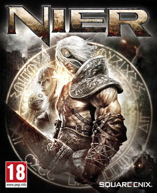

Nier
Nier is an action role-playing video game developed by Cavia and published by Square Enix for the PlayStation 3 and Xbox 360 in April 2010. In Japan, the game was released as Nier Replicant for the PlayStation 3 with a younger main character, while an alternative version titled Nier Gestalt with an older main character was released for the Xbox 360; Gestalt was released outside of Japan as Nier for both platforms. A remaster of the game, Nier Replicant ver.1.22474487139... was released for PlayStation 4, Xbox One, and Windows on April 23, 2021.
The game is a spin-off from the Drakengard series, and follows the fifth ending of the first game, the events of which have left the planet Earth in a state of decay. Set over one thousand years after this, the game puts the player in control of the protagonist as he attempts to find a cure for an illness, known as the Black Scrawl, to which Yonah—either his sister or daughter, depending on the version—has succumbed. Partnering with a talking book known as Grimoire Weiss, he journeys with two other characters, Kainé and Emil, as he attempts to find a remedy and understand the nature of the creatures known as Shades that stalk the world. The gameplay borrows elements from various video game genres, occasionally switching between them and the main role-playing-based gameplay. Nier was designed to have gameplay that would appeal to players outside of Japan, where Cavia is based; additionally, the Gestalt version of the game has an older main character for the same reason. The music was composed by Keiichi Okabe, head of Monaca, a music composition studio, and several albums have been released.
Nier was released to mixed reception; reviewers praised the story, characters and soundtrack and were mixed in their opinions of how well the disparate gameplay elements were connected. The execution of some gameplay elements was criticized, notably the side quests, and the graphics were regarded as substandard. Despite this, the game acquired acclaim among players over time, becoming a cult classic. The original Nier sold 500,000 copies, while the updated version shipped 1.5 million copies worldwide. A sequel developed by PlatinumGames, titled Nier: Automata, was released in 2017.